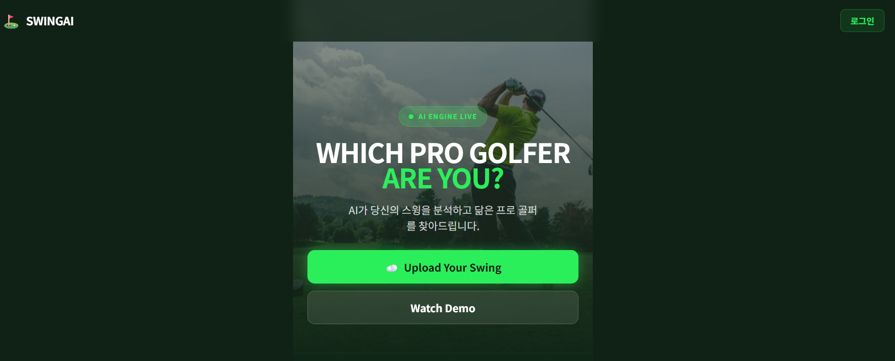
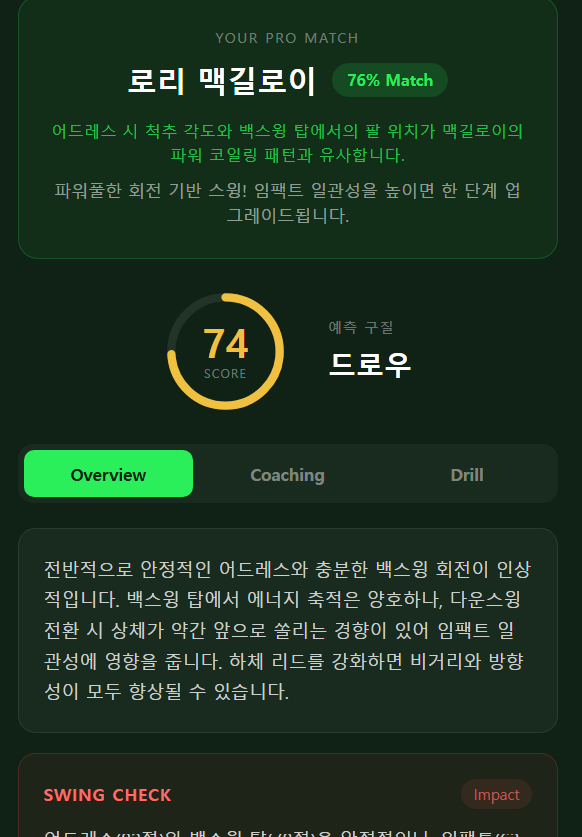
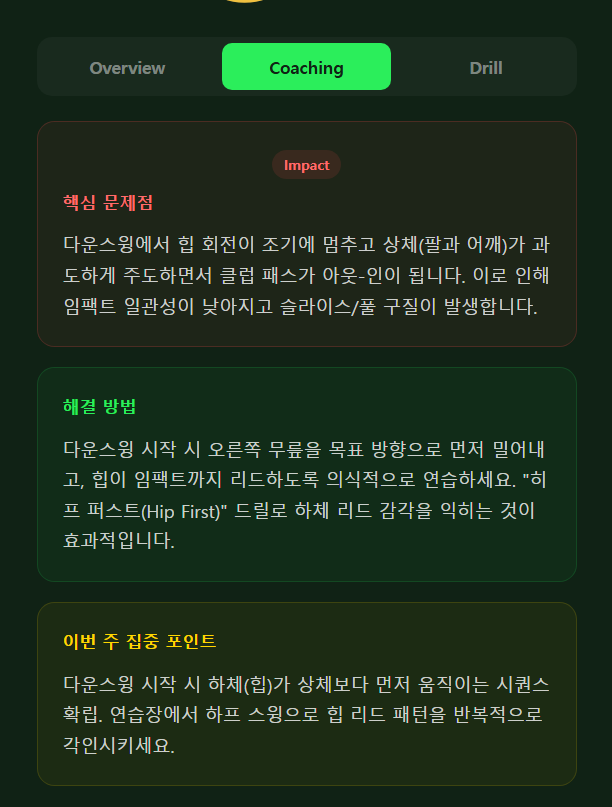
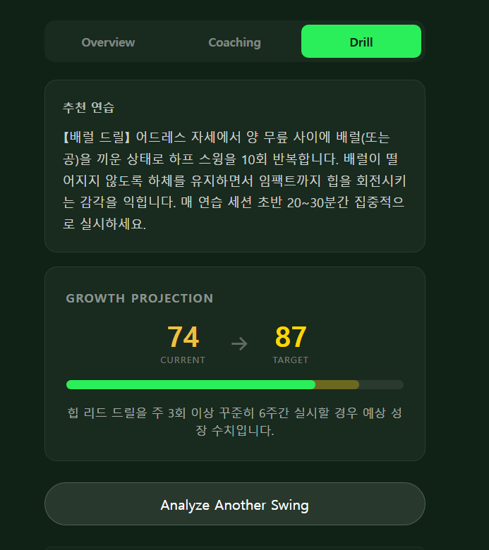
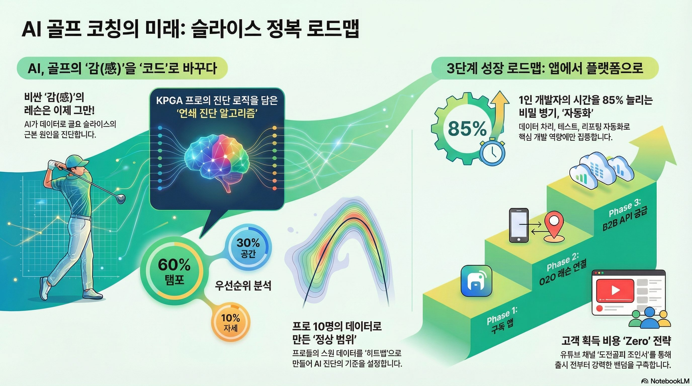
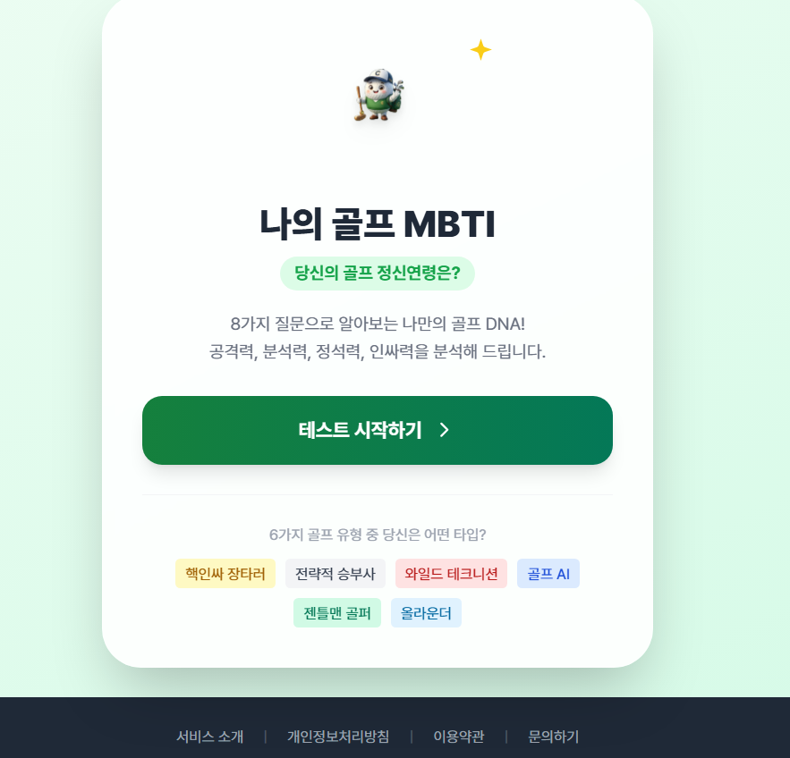
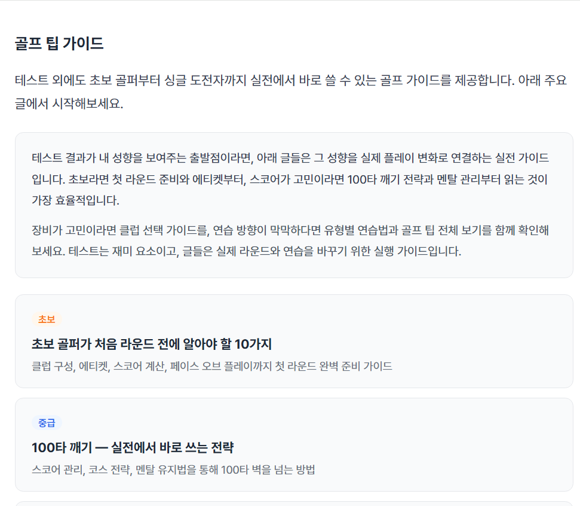
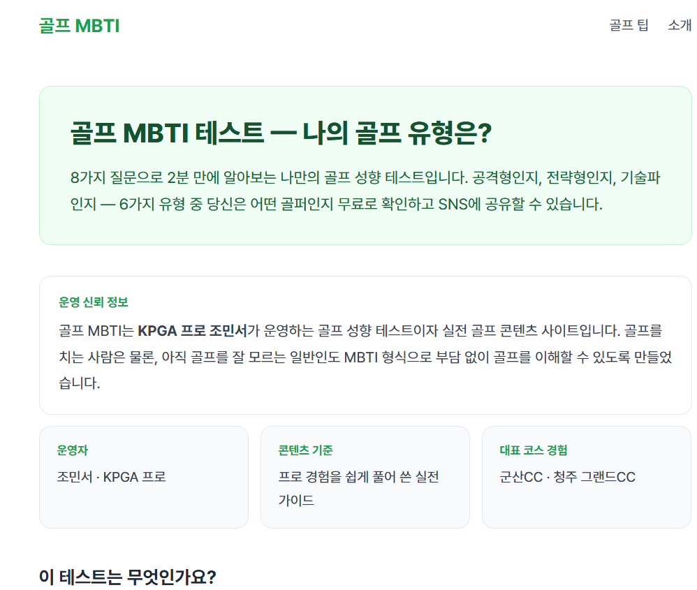
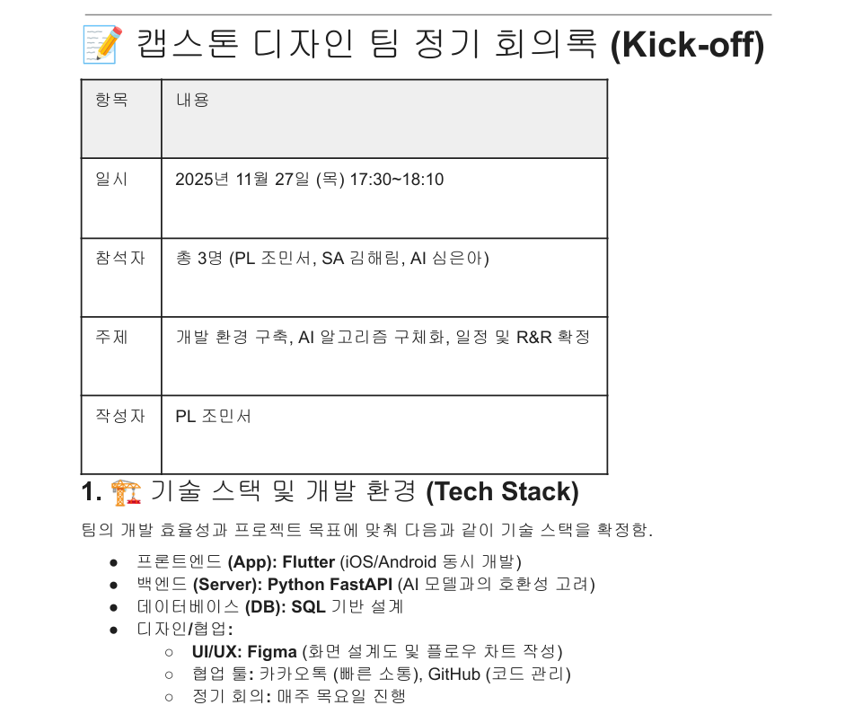

KPGA 프로 골퍼이자 AI 스윙 분석 서비스를 직접 기획·제작한 조민서입니다.
"어떻게 사용자가 다시 돌아오게 만들 것인가" — 이 질문을 스포츠에서 풀고, 이제 메이플스토리 월드에서 이어갑니다.
5년차 KPGA 프로로 레슨을 병행하며 4050 골퍼 수백 명을 지도했습니다. 스윙 오류의 원인이 의지가 아니라 신체 구조에 있다는 것을 현장에서 반복적으로 목격했습니다.
비전공자 출신으로 Python, MediaPipe, Streamlit, Hugging Face를 독학해 AI 스윙 분석 서비스 The Golf Code를 v17까지 직접 기획·구현했습니다. 아이디어를 실제 서비스로 만드는 실행력이 강점입니다.
오랜 플레이 경험을 통해 메이플스토리가 사용자를 반복적으로 돌아오게 만드는 성장 곡선, 보상 구조, 커뮤니티 설계를 사용자 관점에서 체득하고 있습니다.
현장에서 반복적으로 목격한 문제 — 레슨을 받아도, 유튜브를 봐도 실력이 늘지 않는 골퍼들.
직접 설문한 결과 78%가 "원리는 알겠는데 신체적으로 수행이 어렵다"고 답했습니다.
문제는 의지가 아니라 신체 구조였습니다. 그리고 기존 서비스는 자세 차이를 보여주는 데서 멈췄습니다.
스윙 영상을 업로드하면 주요 관절 움직임을 분석하고, 스윙 오류와 연결된 원인 후보를 도출해 오늘의 드릴과 운동 루틴을 제공합니다. 단순히 틀린 자세를 보여주는 앱이 아니라 왜 안 되는지와 오늘 무엇을 해야 하는지까지 연결하는 AI 코치입니다.

The Golf Code v2 메인 화면입니다. 문제 정의에 머무르지 않고 분석 흐름을 실제 서비스 형태로 구현했다는 가장 직접적인 증거입니다.

스윙 영상을 분석해 자세 문제를 결과물로 반환하는 화면입니다. 서비스 핵심 가치가 실제 인터페이스로 구현돼 있습니다.

단순한 자세 비교가 아니라 왜 안 되는지까지 연결하는 구조입니다. 원인 설명과 해석 로직을 기획 단계에서 직접 정의했습니다.

분석 이후 사용자가 오늘 무엇을 해야 하는지까지 이어지게 설계했습니다. 이탈을 줄이기 위한 실행 단계의 화면입니다.

서비스 화면만 만든 것이 아니라, 문제 정의 이후 어떤 흐름과 우선순위로 기능을 확장할지 문서로 구조화했습니다. 메커톤에서도 이런 방식으로 기획을 구체화할 수 있습니다.
트래픽 지표는 최근 30일 Cloudflare 실측 기준입니다.
이 경험이 메커톤과 연결되는 이유 — 골프 학습에서 가장 많이 고민한 것은 "어떻게 사용자가 이탈 없이 반복하게 만들 것인가"였습니다. 게임은 이 문제를 몰입, 성장 곡선, 보상 구조로 오래전부터 풀어온 분야입니다. 저는 스포츠 학습에서 고민해온 이 설계 문제를 메이플스토리 월드라는 다른 문법 안에서 구현해보고 싶습니다.
The Golf Code 2세대 서비스. React + TypeScript로 재구성해 Cloudflare Pages에 배포한 AI 골프 코칭 플랫폼입니다. 분석 → 원인 → 커리큘럼 흐름을 완전한 서비스 형태로 구현했습니다.
8가지 질문으로 골프 성향을 분석하고 15개 실전 가이드로 이어지는 무료 테스트 + 콘텐츠 플랫폼을 직접 기획·개발했습니다.
개발 용어를 암기하기 위해 직접 만든 학습 앱. 기획부터 배포까지 1인 개발.
마케팅비 0원으로 구독자 1,100명 확보. 코딩하는 프로 골퍼의 성장 스토리를 숏폼 콘텐츠로 기록합니다.
LG U+ & YouTube 주관 공모전에서 대상 수상. 공모전 목적으로 처음 만든 릴스로 수상했습니다.
AI학부생 + 디자인 담당과 3인 팀 구성. Flutter + FastAPI + MediaPipe + LSTM 구조 설계 및 팀 리딩.

8가지 질문으로 성향을 분석하고 4개 축을 시각화해 6가지 유형으로 분류하는 테스트 구조를 직접 설계했습니다.

테스트로 유입된 사용자가 실전 콘텐츠까지 이어지도록 15개 골프 가이드를 연결했습니다. 재미에서 체류로 이어지는 구조입니다.

KPGA 프로 조민서가 직접 운영하는 서비스라는 점을 소개 화면에서 명확히 보여줍니다. 프로젝트 소유권과 신뢰도를 함께 확보합니다.
Golf MBTI는 단순한 심리테스트가 아니라, 가벼운 진입형 테스트를 통해 비골퍼와 입문자까지 유입시키고 이후 실전 골프 팁 콘텐츠로 체류를 늘리는 구조로 설계했습니다.
즉, 테스트(재미/바이럴) → 가이드 허브(정보 체류) → 지속 운영의 흐름을 직접 실험한 프로젝트입니다.
Google Search Console 기준, 골프 MBTI 서비스는 검색 결과 노출과 초기 자연 유입이 발생하며 실제 웹에서 발견되기 시작했습니다.
5년 이상 플레이한 유저로서, 메이플스토리가 사용자를 붙잡는 설계를 플레이어 관점에서 체득했습니다.
짧은 보상 루프와 긴 성장 목표가 공존합니다. 오늘 할 수 있는 것(데일리 퀘스트)과 먼 목표(캐릭터 육성) 사이의 밸런스가 이탈을 막는 핵심이라고 이해합니다. 이 구조는 제가 The Golf Code에서 '오늘의 커리큘럼'을 설계할 때도 참고한 개념입니다.
보스 레이드, 파티 플레이처럼 혼자서는 클리어 불가능한 콘텐츠가 커뮤니티를 만들고 재접속 동기를 만들어냅니다. 개인 도전과 협동 도전의 조합이 장기 리텐션을 만드는 방식을 이해합니다.
메이플스토리 월드는 유저가 직접 게임을 제작·서비스할 수 있는 플랫폼입니다. 기존 메이플 IP의 캐릭터·세계관을 활용하면서도 독립적인 게임 경험을 설계할 수 있다는 점에서, 골프 학습 설계에서 쌓아온 리텐션 고민을 새로운 형식으로 실험해볼 수 있는 공간이라고 봅니다.
골프 학습에서 가장 크게 느낀 것은 "반복 훈련이 많을수록 사람들이 떠난다"는 역설입니다. 게임은 이 문제를 이미 풀었습니다. 같은 행동을 반복하게 만들면서도 매번 새로운 이유를 줍니다.
메커톤에서는 기획 직무로 참여해, 이 코어 루프를 팀과 함께 메이플스토리 월드 플랫폼 안에서 구체화하고 싶습니다.
캡스톤 디자인 PL로서 AI학부생·디자인 담당과 3인 팀을 이끌며 기술 스택 결정, 개발 로드맵 설계, 회의록·명세서 작성을 주도했습니다. 빠르게 실행하는 강점이 있지만, 팀 전체가 같은 호흡으로 나아갈 수 있도록 속도를 조율하는 것이 기획자의 역할이라고 배웠습니다.
메커톤에서는 아이디어 정의부터 기능 구조 설계, 팀 커뮤니케이션까지 기획 전반을 담당하겠습니다.
개발 직무로 참여하게 되더라도 바로 기여 가능합니다. AI 프로덕트 빌더처럼 빠르게 MVP를 만들고, 사용 반응을 보며 검증하고, 다시 루프 구조를 다듬는 방식에 익숙합니다. 즉, 단순 구현 인력이 아니라 실험 가능한 프로덕트를 빠르게 세우는 개발형 기획자에 가깝습니다.

회의록에 PL 조민서, 작성자, Action Items가 명시돼 있습니다. 기획 문서 작성과 역할 조율을 실제로 맡았다는 증빙으로 사용합니다.